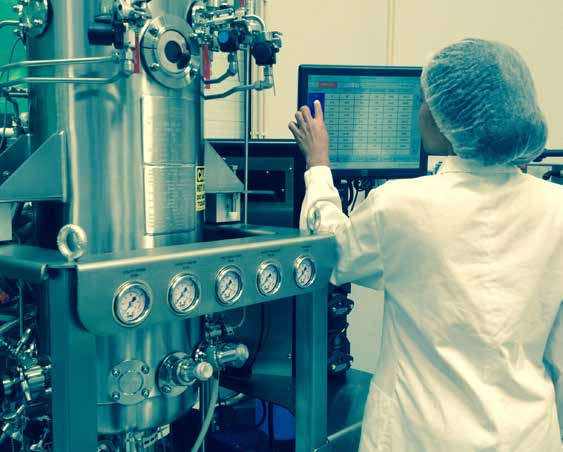

State-of-the-Art Bioprocesses
Industrial extraction technologies ensuring delicate compound integrity.
Supercritical CO2 Extraction
Working at relatively low temperatures under total absence of oxygen, Supercritical CO2 extraction preserves the valuable natural active ingredients. CO2 is food grade and FDA GRAS designated.
Extracts obtained are sterile, highly pure, completely free from residual solvents, and require no preservation agents.


Steam and Hydro Distillation
Steam distillation removes aromatic molecules from biological matrixes rapidly, preventing oil degradation by controlling temperature and steam pressure. Hydro distillation uses water to isolate essential oils and pure hydrolats.
Lyophilization (Freeze Drying)
A water-removal dehydration technique operating under vacuum conditions to enable sublimation. Ideal for temperature-sensitive biological origin products like enzymes, vaccines, and cell lysates to extend shelf life.


Bioreactor Fermentation
Utilizing bacteria and yeast cultures for growth, exopolysaccharides production, and enzymatic hydrolysis applied across pharmaceuticals, cosmetics, and bioenergy.